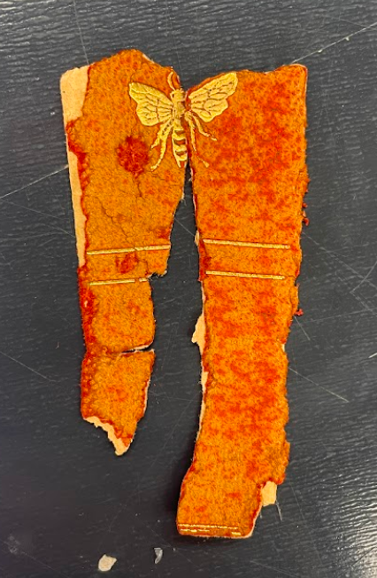
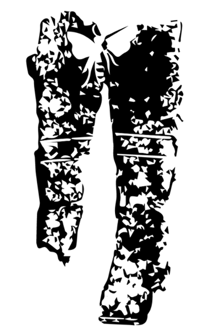
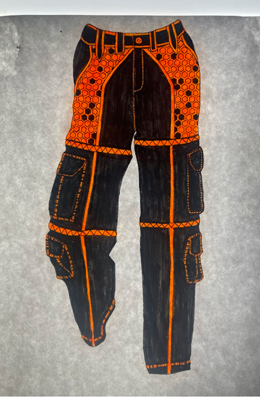
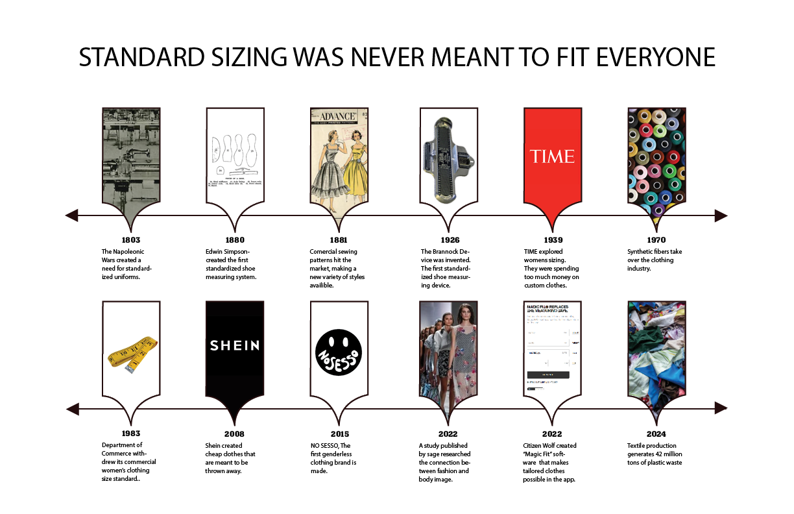
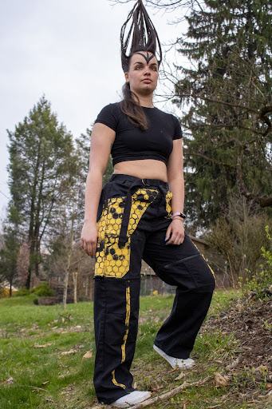
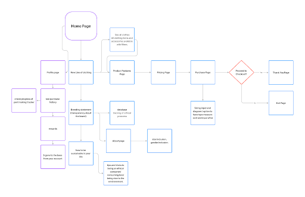
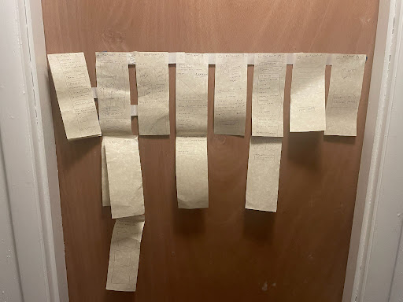
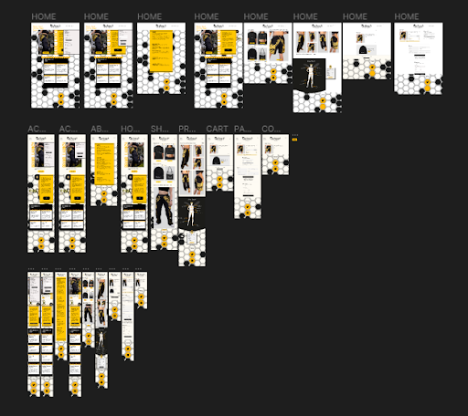

Beezkneez
INTRODUCTION
From a scrap of paper to a full brand, the design process drove this entire project. I generated as much as I could and built from each step, incooportating research and an array of materials to bring BeezKneez to life.
- 
- 
- 

RESEARCH
The next phase of this project was to research the ideals that drive my brand. I looked into standard sizing and found that it perpetuated gendered clothing as well as specific body types. I also wanted to find a way to make this brand sustainable
LOGO IDEATION
My logo needed some work, I expieremented with ideas similar to my first as well as totally different ones.
FINAL LOGO
After generating I took elements from my initial Idea and added some hand drawn type to bring it to life.
MAKING THE PANTS
This is my largest sewing project to come but I knew that this was the best way to get the images I wanted. I screenprinted a honeycomb pattern on yellow fabric and began assembling.
FINAL PANTS
I then took photos of the pants on my models to use on the website. I had a variety of fashion shots and more isolated shots.
WEBSITE PROCESS
I started by making an information archetiecture, followed by sketching out the website, then creating the real thing in figma.
  FINAL PROTOTYPE
Feel free to load it up on your own device by scanning this qr code!